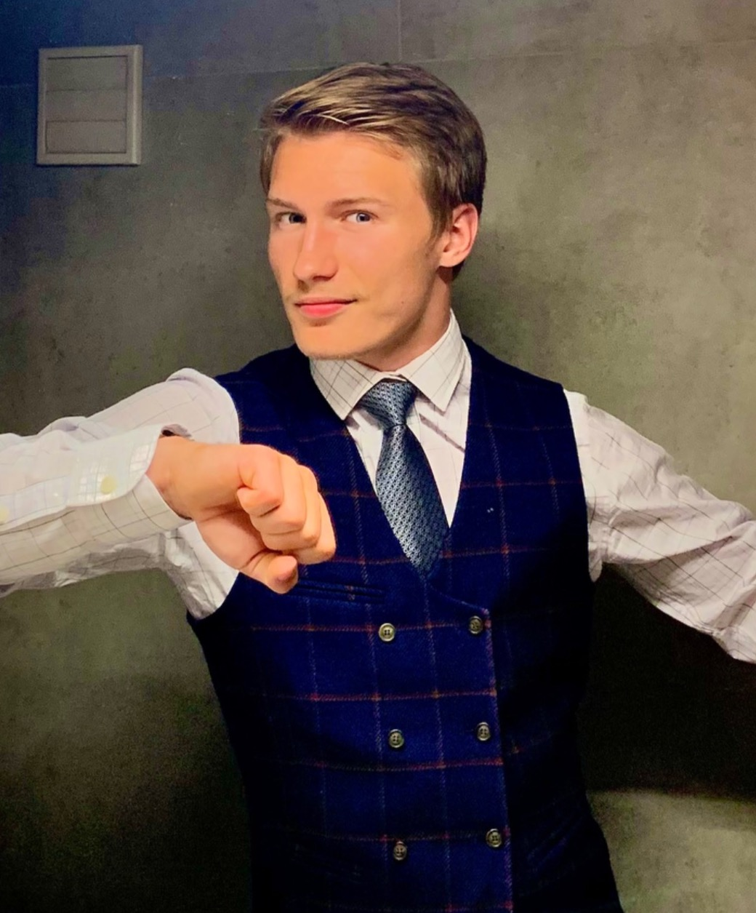

Courage runs in the family. I'm putting it to work in the operating room.

Their struggles for freedom and justice left me an inheritance no textbook could: courage, service, and a refusal to give up on anyone. Medicine is how I honor it, because every beat counts.
The spark came early. In high school I used computational fluid dynamics to model arterial stenosis. Watching blood flow choke through a narrowed vessel on a screen, I understood the heart as a machine that could be studied, predicted, and one day repaired. I've been fascinated by its mechanics ever since.
Now, in Lublin, I'm on a mission to merge research with hands-on patient care, laying the foundation for a future where discoveries translate directly into life-saving treatments, and pushing the boundaries of what's possible in cardiac surgery.